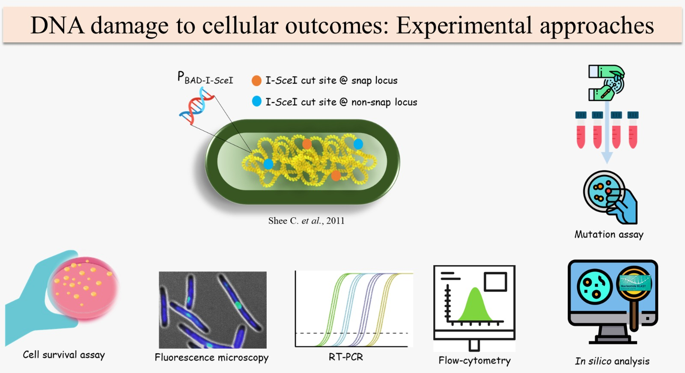
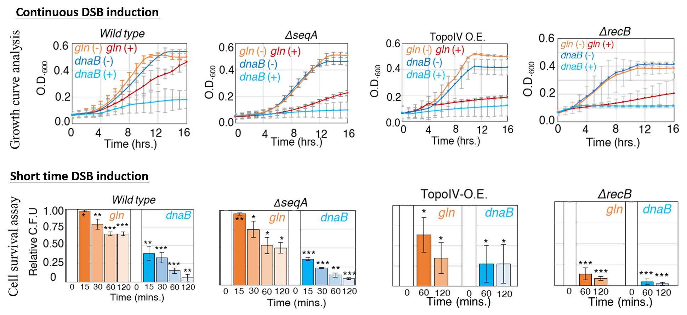
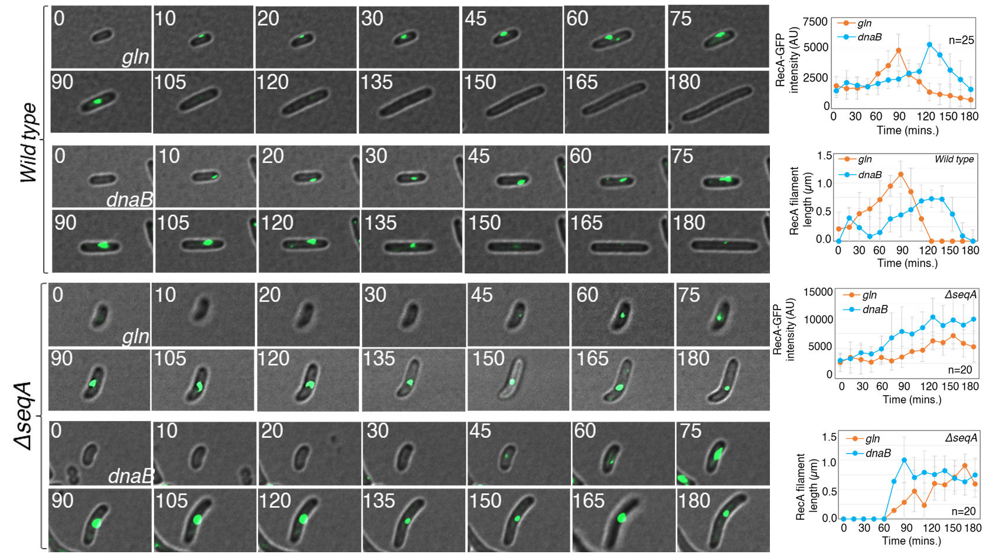
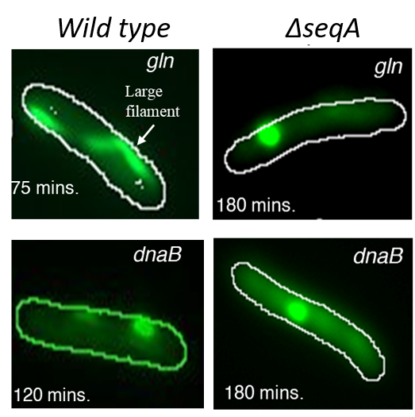
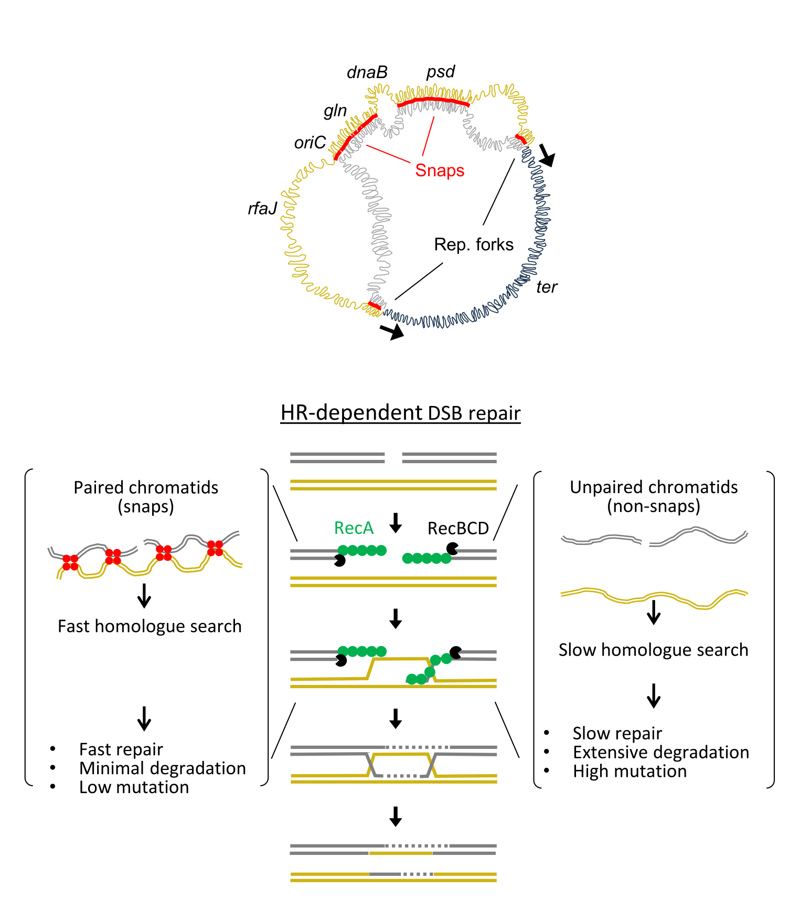
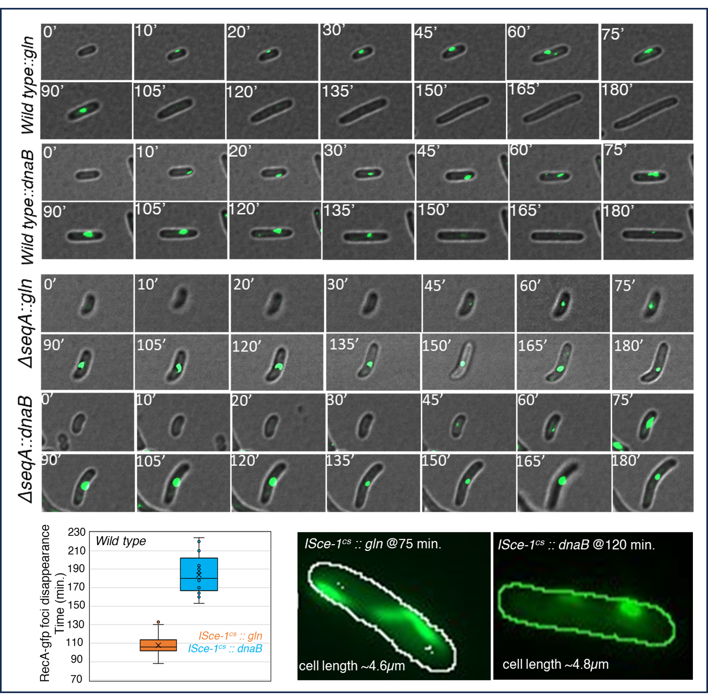

Research Hypothesis
Does cohesion improve repair fidelity?
Does SeqA-mediated sister chromatid cohesion modulate the efficiency and fidelity of HR-mediated DSB repair by influencing the spatial proximity of homologous sequences?
Featured Project
Homology search is enhanced by sister chromatid cohesion at snap loci.
Research Hypothesis
Does SeqA-mediated sister chromatid cohesion modulate the efficiency and fidelity of HR-mediated DSB repair by influencing the spatial proximity of homologous sequences?
Background
In E. coli, certain chromosomal loci known as snap loci exhibit prolonged post-replication cohesion. This spatial proximity may facilitate rapid and accurate homologous recombination repair compared with non-snap loci that segregate early.
Experimental Design
Key Results
Figures

Showing I-SceI-induced DSBs at snap and non-snap loci and downstream assays including microscopy, survival, mutation, RT-PCR, and in silico analysis.

Snap loci exhibit faster repair kinetics and greater survival than non-snap loci.

Time-lapse dynamics of RecA filament formation and resolution show enhanced speed at snap loci.

Snap loci show continuous, elongated filaments compared with fragmented structures at non-snap loci.

Proposed model showing how SeqA-mediated sister chromatid cohesion at snap loci enhances homologous recombination-based repair, while early segregation at non-snap loci results in delayed repair and higher mutational burden.

Model figure contrasting paired chromatids at snap loci with unpaired chromatids at non-snap loci during homologous recombination-dependent repair.

Time-course microscopy panel comparing RecA-GFP signal during I-SceI-induced breaks at gln and dnaB loci.
Snap loci act as spatial anchors, ensuring chromosomal symmetry and high-fidelity repair through SeqA-mediated cohesion.